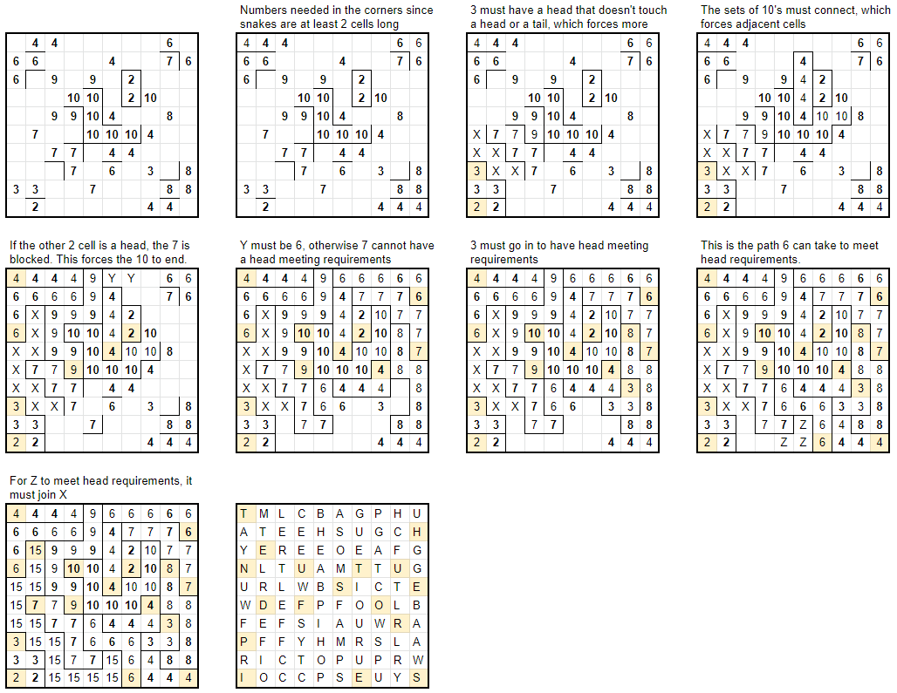

Solution: National Zoo
Answer: TIGERSHARK
Written by Josh Fernandes
See walkthroughs for the solve paths through each of the four puzzles. The solutions give the following phrases for each puzzle
- Snake pit: THE NUT USED FOR PIES
- Penguin floes: CAESAR FOUR
- Fish tanks: THE CREATURE BEARS PUPS
- Bat cave: BUT EATS DORY
From the emojis, it is suggested that the snake and penguin phrases must be combined, and separately the fish and bat phrases must be. The nut used for pies is the PECAN, and applying a Caesar (rotational) shift of 4 gives TIGER. The creature that bears pups but eats dory is cluing SHARK, as shark young are called pups. Dory refers to both the type of fish (may be predated upon by some sharks) and the character from Finding Nemo. The character is nearly eaten by a (well-meaning) shark. Putting the answers together gives the solution TIGER SHARK, a well-known species of shark.
Author’s Notes
If you want a challenge, remove the following clues from each puzzle and try to solve them.
- Snake pit: The 9, 10, 4, 10 adjacent to the central four cells (preserve clue symmetry)
- Penguin floes: N/A
- Fish tanks: The vertical 6
- Bat cave: 7 from column 1, 7 from column 8, 10 from column 10
Snake pit:

Penguin floes: